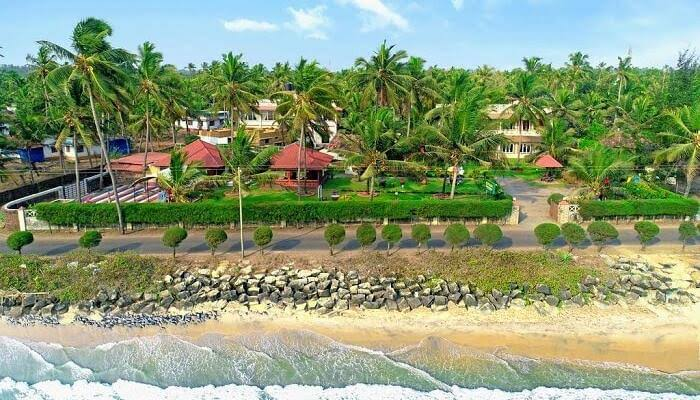

About us
Located on the Malabar Coast of Kerala, Kannur (fondly known as Cannanore), is a beautiful city bundled with a plethora of sightseeing options like beaches, monuments, ancient temples and picnic spots.Steeped in the distinctive local art forms like Theyyam, Kannur still has an aura of the bygone colonial era. The deep footprints of the Dutch, the Portuguese, the British and the Mysore Sultanate are still imbibed into the town and can be witnessed all around. Kannur District played an important role in the Indian freedom movement. The Indian National Congress, founded in 1885, established a Malabar District committee in 1908. A branch of the All India Home Rule League, founded by Dr. Annie Besant, functioned in Thalassery during this period and among its active workers was V.K. Krishna Menon. By the end of 1939, a branch of the Communist Party of India was formally established at Pinarayi, a village near Thalassery. Payyannur was the main venue of the Salt Satyagraha, a major turning point in the Indian Freedom Movement, in Malabar.